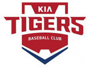
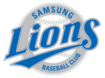
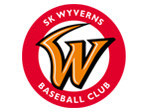
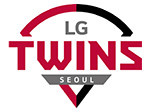
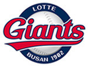
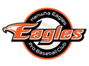
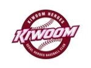
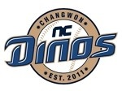
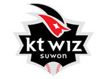

|
|
|
|
|
대표 선수 2명은 현재 구단에서 뛰는 선수로 서술 |
|
|---|---|
|  | KIA 타이거즈는 연고지는 광주광역시이고, 전신팀인 해태 타이거즈 시절까지 포함하여 우승횟수 총 11회이다. 1982년 해태 타이거즈라는 이름으로 프로야구 원년에 창단되었고, 경영 악화로 인하여 현대-기아 자동차 그룹이 인수하여 2001년 현재의 구단명으로 바뀌었다. 홈구장은 1982~2013년까지는 '무등 야구장'을 사용하였고, 2014년부터 현재까지는 '광주-기아 챔피언스 필드'를 사용하고 있다. 대표적인 선수로는 현재 KBO 최고의 투수 중 한명인 양현종과 2009년부터 내야를 든든히 지키고 있는 안치홍이 있다. |
|  | 삼성 라이온즈는 연고지는 대구광역시이고, 1982년부터 지금까지 같은 팀명을 사용하고 있으며 우승횟수 총 8회이다. 1982년 삼성 라이온즈라는 이름으로 원년에 창단되었고, 현재 모기업이 삼성그룹인 팀답게 리그 내에서 막대한 영향력을 발휘하고 있다. 홈구장은 1982~2015까지 '대구시민운동장 야구장'을 사용하였고, 2016년부터 현재까지는 '대구 삼성 라이온즈 파크'를 사용하고 있다. 대표적인 선수로는 데뷔 이래 16년 연속 세 자릿수 안타를 기록한 유이한 선수인 박한이와 2015년 신인왕을 차지했던 구자욱이 있다. |
| 두산 베어스는 연고지는 서울특별시이고, 전신팀인 OB 베이즈 시절까지 포함하여 우승횟수 총 5회이다.
1982년 OB 베이즈라는 이름으로 원년에 창단되었고, 주류 업체의 이미지를 벗기 위해 모기업인 두산그룹의 이름을 따서 1999년 현재의 구단명으로 바뀌었다. 홈구장은 1982~1985년까지 3번 바뀌었다가 1986년부터 현재까지는 '서울종합운동장 야구장(잠실야구장)' LG 트윈스와 함께 사용하고 있다. 대표적인 선수로는 2018년 홈런왕인 김재환과 두산 베어스 최초로 20홈런-20도루를 달성한 박건우가 있다. |
|
|  | SK 와이번스는 연고지는 인천광역시이고, 창단해인 2000년부터 지금까지 우승횟수 총 4회이다. 2000년에 쌍방울 레이더스의 법정 퇴출로 기존의 쌍방울 팀이 해체되면서 뿔뿔이 흩어진 전 쌍방울 선수들과 계약+드래프트를 통해 각 구단 선수 2명씩 차출, 용병 3명을 통해 구단을 구성하였다. 홈구장은 2000~2001년 '숭의 야구장'을 사용하였고, 2002년부터 현재까지 '인천 SK행복드림구장(舊 문학 야구장)'을 사용하고 있다. 대표적인 선수로는 2008~2012년 SK 와이번스의 최전성기를 책임졌던 No.1 에이스 투수 김광현과 같이 최전성기를 책임진 타자 최정이 있다. |
|  | LG 트윈스는 연고지는 서울특별시이고, 전신팀인 MBC청룡 때는 우승이 없었으나 1990년 LG 트윈스로 바뀐 후 우승횟수 총 2회이다. 1982년 MBC 청룡이라는 이름으로 원년에 창단되었고, MBC 청룡이 점유하고 있던 모든 권리가 인수 과정에서 그대로 LG 트윈스에 이어지며 선수들의 기록도 MBC-LG를 이어서 기록하고 있다. 홈구장은 1982년 '동대문야구장'을 사용하였으나, 그 해에 바로 '서울종합운동장 야구장'을 사용하며 현재까지 사용하고 있다.(두산과 함께 사용 중이다) 대표적인 선수로는 KBO리그 최다안타 기록을 세우고 아직 현재진행형인 박용택과 메이저리그에 갔다가 국내 복귀하면서 LG로 간 타격기계 김현수가 있다. |
|  | 롯데 자이언츠는 연고지는 부산광역시이고, 원년인 1982년부터 현재까지 같은 구단 이름을 유지해오고 있으며 우승횟수는 총 2회이다. 삼성 라이온즈와 더불어 원년부터 연고지와 팀명, 모기업이 바뀌지 않으며 프로야구 역사와 함께한 팀이자 프로야구가 태동하기 전인 실업야구 시절부터 KBO보다 오랜 역사를 자랑하는 유일한 팀이다. 홈구장은 1982~1985년 '구덕 야구장'을 사용하였고, 1986년부터 현재까지는 '사직 야구장'을 사용하고 있다. 대표적인 선수로는 롯데-일본-메이저리그를 거쳐 다시 KBO로 돌아온 조선의 4번타자라 불리는 이대호와 현역 선수 중 통산 타율 2위를 기록 중인 손아섭이 있다. |
|  | 한와 이글스는 연고지는 대전광역시이고, 1986~1993년 전신팀인 빙그레 이글스 시절에는 우승이 없었으나 1994년 한화 이글스로 바뀐 후 우승횟수 1회가 있다. 당시 한화그룹이 대중에 잘 알려져있지 않고, 아는 사람들에게도 방위산업체 이미지가 강해서 그룹 계열사 중 유일한 소비재 업체인 빙그레의 이름을 사용했다. 1993년 빙그레가 계열 분리되면서 1994년 한화 이글스로 이름이 바뀌었다. 홈구장은 1986년부터 '대전 한화생명 이글스 파크'를 사용 중이며, 제 2 홈구장으로는 '청주종합운동장 야구장'이 있다. 대표적인 선수로는 KBO 역대 최고의 우타자라 불리는 김태균과 역대 최고의 2루수로 불리는 정근우가 있다. |
|  | 키움 히어로즈는 연고지는 서울특별시이고, 2008년 우리 히어로즈를 시작으로, 서울/넥센 히어로즈를 거치며 현재 키움 히어로즈가 될 때까지 우승횟수는 없다. 현대 유니콘스가 2007년 해체된 후 구단명칭을 바꾸거나 완전히 인수한 것이 아니라 재창단함으로써 현대 유니콘스의 선수와 프런트의 대부분을 고용 승계하였다. 홈구장은 2008~2015년까지 '목동 야구장'을 사용 하였고, 2016년부터 현재까지는 우리나라에 유일한 돔 야구장인 '고척 스카이돔'을 사용하고 있다. 대표적인 선수로는 KBO리그에서 2012~2015년 4년 동안 홈런왕을 차지하였던 최고의 파워히터 박병호와 KBO리그 통산 최초로 한 시즌 200안타를 기록한 서건창이 있다. |
|  | NC 다이노스는 연고지는 경상남도 창원시이고, 2011년 창단해 2013년부터 본격적으로 1군에 참가하였으며 우승횟수는 아직 없다. 2011시즌 창단해 2년동안 2군에서 담금질을 한 후 2013년 1군 무대에 데뷔하여 짧은 기간임에도 2014~2017년까지 4년 연속 포스트시즌에 진출하는 저력을 보여주었다. 홈구장은 2012~2018년까지 '마산종합운동장 야구장'을 사용하였고, 2019년 현재는 '창원 NC 파크'를 사용하고 있다. 대표적인 선수로는 KBO최초 4년 연속 170안타를 기록한 NC의 프랜차이즈 스타 나성범과 올해 두산에서 4년 총액 125억원에 계약을 맺은 현 KBO 최고의 포수 양의지가 있다. |
|  | KT 위즈는 연고지는 연고지는 경기도 수원시이고, 2013년 창단해 2015년부터 본격적으로 1군에 참가하였으며 우승횟수는 아직 없다. 2013시즌 창단하여 2년동안 2군에서 담금질을 하였고 2015년 1군 무대에 데뷔하였으나 짧은 기간 강한 임팩트를 남긴 NC와는 다르게 아직까지 포스트시즌에 진출한 적은 없다. KBO리그의 10구단 체제를 연 구단이며, 홈구장은 2015년부터 현재까지 '수원 케이티 위즈 파크'를 사용하고 있다. 대표적인 선수로는 2018년 홈런 29개를 치며 고졸 신인 홈런 신기록을 세우며 신인왕을 차지한 강백호와 메이저리그를 갔다가 KBO로 복귀한 황재균이 있다. |
| 쌍방울 레이더스 | 쌍방울 레이더스는 1990년 창단되어 1991년부터 1999년까지 KBO 리그에 존재했던 프로야구단이다. 연고지는 전라북도 전주이고 KBO 원년 6팀 이후에 창단된 2번째 신생팀으로써 8구단 시대를 연 팀이다. 1991~1995년에는 각각 68788위라는 성적을 거두며 만년 꼴찌팀이였다. 해태 타이거즈가 너무 강하니 해태를 약화시키려고 아니냐는 소문이 돌 정도였다고 한다. 그러다가 1996년 김성근을 신임 감독으로 영입, 전년보다 4배 많은 15억을 스카우트 자금으로 배정하는 등 파격적인 지원을 통해 정규시즌 2위까지 달성한다. 1997년도에도 정규시즌 3위로 포스트시즌에 진출하였지만 탈락하게 된다. 연봉 총액 1위를 달성할 정도로 돈을 많이 썼는데 가난한 구단의 이미지에도 불구하고 이러한 운영으로 결국 외환 위기 이후 부메랑으로 돌아오게 된다. IMF가 터지고 무리하게 자금을 운용하다가 심각한 재정난에 빠지게 되고 1999년 이후 모기업인 쌍방울이 팀 운영을 할 수 없게 되면서 KBO에 의한 위탁 관리가 이루어졌다. 프로야구단에 관심을 보인 SK그룹은 쌍방울과의 협상은 철저히 배제하고, KBO와만 접촉하면서 레이더스의 인수가 아닌 새로운 구단의 창단으로 계획을 갖는다. SK그룹 입장에서는 조만간 자동적으로 퇴출되는 쌍방울과 굳이 접촉할 이유가 없었기 때문이다. 결국 쌍방울 레이더스는 창단 10주년을 3개월 앞둔 2000년 1월 7일에 해체되게 된다. |
| 현대 유니콘스 | 삼미 슈퍼스타즈(1982~1985) → 청보 핀토스(1985~1987) → 태평양 돌핀스(1988~1995) → 현대 유니콘스(1996~2007) 연고지는 인천광역시&경기도&강원도였으나 2000년 서울로 연고지 이전을 선언하면서 임시 홈구장으로 수원 야구장을 사용하였다. 삼미 슈퍼스타즈는 1982년 창단되었다가 1985년 여름 풍한그룹에 매각되어 청보 핀토스로 팀명이 변경되었다. 청보 핀토스는 1985년 후기리그를 시작으로 창단되었는데 청보식품(풍한그룹의 식품 쪽 상표명)의 사업이 생각보다 확장하지 못하고, 1980년대 후반 섬유업계 구조적 불황까지 겹치며 1987년 시즌 후 태평양화학에 구단이 매각되며 태평양 돌핀스로 바뀌었다. 태평양 돌핀스는 모기업인 태평양의 공격적인 구조조정의 일환으로 현대그룹에 매각되어 현대 유니콘스로 1996년 팀명이 변경된다. 현대그룹은 태평양 돌핀스를 매입할 때 470억원이라는 어마어마한 금액을 사용하였고, 창단 첫해인 1996년부터 정규시즌 4위, 포스트시즌 2위로 준우승을 하게 된다. 1997년에는 6위를 기록하며 잠시 추락하였으나, 1998년 현대그룹의 과감한 지원에 힘입어 창단 첫 우승을 하게 된다. 이후에도 2000년, 2003년, 2004년 우승을 하였으나, 현대그룹의 사세가 기우는 것과 함께 삐걱거리면서 2006년부터 급격히 어려워졌다. 매각 시도가 농협, STX, KT가 있었으나 모두 좌절되었고, 7개 구단으로의 축소가 점쳐지던 중, 센테니얼 인베스트먼트라는 투자회사에서 인수 의사를 밝힌다. 하지만 선수단과 프런트는 이 회사에 승계되었지만 현대 유니콘스를 해체한 후 '히어로즈'란 구단명으로 재창단함에 따라 인수임에도 불구하고, 공식적으로는 해체가 되었기에 삼미-청보-태평양-현대로 이어지는 계보와 우승기록들은 사라지게 되었다. |